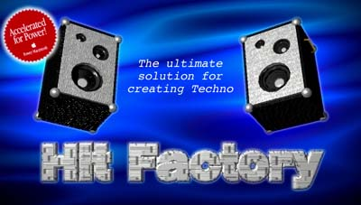
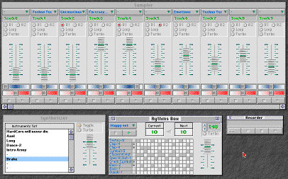

Welcome to the official Web site
of the unique Mac software for creating Techno.
- Description of Hit Factory and required hardware.
- Ordering Hit Factory.
- History of Hit Factory.
- Downloading the software.
- Others sound programs from the same author.
If you got connected directly on that page, click here to display the summary of the Hit Factory official web site.

Click here to see this picture in full-screen size.
The Hit Factory music software is going to transform your Mac in a professional studio. It brings you a stereo sampler (with 8 to 30 tracks) with Direct To Disk possibilities, a stereo synthesizer (up to 10 channels of polyphony) and a stereo rhythms box (up to 10 channels of polyphony). Furthermore you can record everything you do, then reproduce (automation) or modify them.
With this software, you will be able to create easily your own musics or remix the ones you like.
Hit Factory is the perfect software for all thoses who like to create dance music, techno, trance, rap... and "LIVE" remixes. Thanks to its Direct To Disk capabilities, it can also be used as a multitracks audio numeric recorder for "rock" musicians.
Hit Factory is divided into five parts, each one using its own window:
- a sampler, which allows you to loop whatever sound you want or to read a file using Direct To Disk system. You can also modify the sound in real-time: reading speed (pitch), volume and panoramic or even add reverb.
- a synthesizer with which you can use twenty different sounds, which are turned into instruments. The synthesizer is directed from the keyboard.
- a rhythms box in which you can create up to twenty rhythms using ten instruments...
- a recorder which allows you to record your actions (i.e. your mixing) in order to create what is called a "music" and then reproduces it in an animated way with a precision of 1/100 of second: paddles move, buttons light on...
- an editor designed to modify your mixing.
Hit Factory requires a PowerMacintosh or compatible. The computer must at least be running under System 7.1 and should have the Sound Manager 3.2 installed (included with QuickTime 2.5). You need a 14 inches monitor or more (15 is a lot better!).
This program needs 900K of memory to run. The rest of the memory is used by the sounds. The more your sounds are big, the more you will have to increase the size of the memory allocated to Hit Factory.
Hit Factory works with sound files of System 7 type or AIFF type (for Direct To Disk only). Theses sounds may be 8 or 16 bits, mono or stereo and even of whatever frequency: 11Khz, 22Khz, 44Khz...
Hit Factory is sold $U.S. 55 plus shipping. After ordering the software, you will receive a unique serial number which will allow you to access to all the functions of Hit Factory without time limit. Hit Factory is provided on a CD-Rom, which contains:
- the latest version of Hit Factory and its documentation.
- a amazing selection of more than 600 samples (musics, rythmes, instruments, voices...) recorded in CD quality.
- lots of utilities, including the latest version of Bank Factory...
- all the required extensions to run Hit Factory: Sound Sprocket Filter, MIDI Manager, QuickTime 2.5...
- others docs about the Sound on Macintosh...
In order to receive Hit Factory, you must download the "Register" application in the downloading section and follow the instructions.
Version 3.1.1: (March 97)
- A new part: the rhythms box.
- The recorder now works with a precision of 1/100 of second.
- You can rename or change the location of the sound files used with a music, Hit Factory will find them again (as long as thez stay on the same drive).
- Direct To Disk possibilities with the sampler.
- Real time pitch correction on sampler's tracks in a range of 30%
- Real time reverb on samler's tracks.
- MIDI compatibility.
- A high-speed sound files loading system: Fast Load
- Balloon Help is now supported.
- Piano has been a lot improved.
- The size of the sampler's window (i.e. the number of visible tracks) is automaticaly set up according to the screen resolution when Hit Factory starts up.
- Paddles operation has been perfected.
- And lots of other improvements...
Version 3.1.2: (March 97)
- Addition of volume, panoramic and pitch settings on each part of the rhythms box.
Version 3.1.3: (March 97)
- Correction of a bug appearing only on some kind of Performas.
- MIDI compatibility for the rhythms box.
Version 3.1.4: (April 97)
- Apple Events supported ('odoc' and 'quit').
- The "About Hit Factory..." window now shows the amount of free memory.
- New open dialog which displays informations about the selected sound.
- New MIDI driver directly interfaced with the MIDI Manager (it doesn't use QuickTime anymore), which automatically connects.
- The driver of the recorder was improved (reading mode).
Version 3.1.5: (June 97)
- 3D buttons.
- Improved reverb.
- The rhythms box can now send Midi messages, in order to use directly the drums kits of your synthetizer.
- Improved piano: the "Enter" key starts / stops the rhythms box and the "Space" key pauses / resumes the sampler.
- Drag & Drop aware: you can now drop the sound, Bank, AIFF, Pattern files from the Finder on Hit Factory's windows.
- Correction of bug concerning the volume setting of the rhythms box.
Older versions:
- Hit Factory 1.0 et 1.1: (January 96) version reserved for bêta-testing.
- *Hit Factory 1.2: (April 96) first version distributed as a shareware (France only).
- Hit Factory 2.0ß: (May 96) version sent to registed users, which corrects many bugs.
- *Hit Factory 2.1: (June 96) new sound driver.
- Hit Factory 2.2: (August 96) some improvements.
- Hit Factory 2.5.1: (October 96) Direct To Disk feature, new recorder with a precision of a hundred of second, MIDI compatibility, new graphical interface.
- Hit Factory 2.5.2: (November 96) real-time ±30% pitch correction.
- Hit Factory 2.5.3: (December 96) new interface, real-time reverb.
- Hit Factory 2.5.4: (December 96) faster editor.
- Hit Factory 2.5.5: (January 97) add Fast Load system.
(*) version distributed as a shareware.
Click on the item you wish to download:
Sound Infos 1.2
Sound Infos is very useful to all thoses who do Music on Macs: it gives you all the informations you need about your hardware (audio capabilities) and software (versions of QuickTime, Sound Manager...).
Sound Infos is a FAT program, it means it runs on 68K and it is optimized for PowerPC.
Download Sound Infos 1.2 (32K).
 Rhythm Factory 0.9
Rhythm Factory 0.9
Rhythm Factory is a rhythms box very easy to use, which uses Bank files as Drum Sounds Kits (a Bank is provided as an example). I had wrote this program as a first "try" before adding the rhythms box part to Hit Factory. Although that one is much less powerfull than the one it Hit Factory, it is at least free! But be aware that this program will not evoluate anymore.
Rhythm Factory is a FAT program, it means it runs on 68K and it is optimized for PowerPC.
Download Rhythm Factory 0.9 (330K).
Vu-Meter 1.0
Vu-Meter is a small utility which diplays a vu-meter on your screen, showing the volume of the sound at the audio input port of your Mac.
Vu-Meter is a FAT program, it means it runs on 68K and it is optimized for PowerPC.
Download Vu-Meter 1.0 (30K).
Screen Sound 1.0
Screen Sound is an oscilloscope which shows the sound wave of the sound at the audio input port of the Mac.
Screen Sound is a FAT program, it means it runs on 68K and it is optimized for PowerPC.
Download Screen Sound 1.0 (36K).
All the archives available on this site are in Stuff-It format.
Comments about this site or Hit Factory? You are also passionnated by Techno and you would like to create your page on the Hit Factory site or to offer your musics?
Don't hesitate to contact me: Pierre-Olivier Latour newman@club-internet.fr.

Last updated 23 June 1997
Next
This Mac Ring site is owned by
Pierre-Olivier Latour.
Click to
[ Skip Next
| Next 5
| Random ]
Want to join the Ring? Click here for
info.